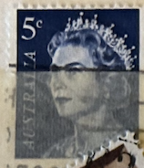
| SOURCE | TITLE| IMAGE MATCH | click to source page |
| Miraheze | Australia – postage issues, 1913 to present - Stamp Encyclopedia | 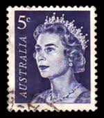 |
| HipStamp | Australia #399 5c Queen Elizabeth II | Australia & Oceania - Australia, General Issue Stamp / HipStamp | 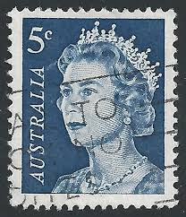 |
| Colnect | Stamp: Queen Elizabeth II 5c - I(L) (Australia(Queen Elizabeth II - Decimal Definitives) Mi:AU 391Dl,Yt:AU 323Ab,Col:AU 1967.09.29-02 📮 | 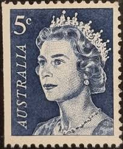 |
| HipStamp | Browse Listings in Australia & Oceania / HipStamp | 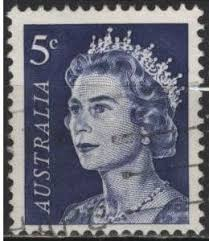 |
| eBay | Australia Queen Stamp 1967 for sale | eBay | 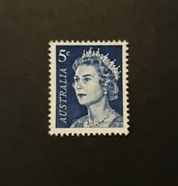 |
| eBay | Australia Queen Elizabeth II 5 Cent Blue Stamp 1966 | eBay | 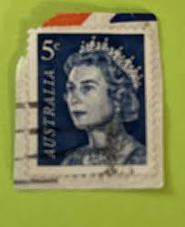 |
| Australian Stamp Catalogue | http://www.australianstrampcatalogue.com | 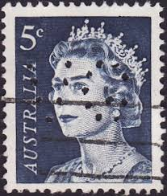 |
| Alamy | Used Australia 5c blue Stamp with Queen Elizabeth II Stock Photo - Alamy | 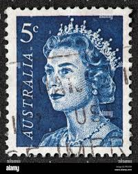 |
| Todocolección | australia // yvert 421 // 1970 ... usado - Buy Antique stamps of Australia on todocoleccion | 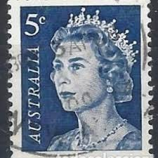 |
| PicClick | RARE AUSTRALIA Postage Stamps, Green Queen Elizabeth 1 1/2 $55.00 - PicClick | 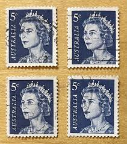 |
| Shutterstock | 5 Cents Draw: Over 47 Royalty-Free Licensable Stock Photos | Shutterstock | 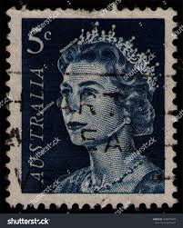 |
| Flickr | Australia 1967 Queen Elizabeth II 5C | Please be aware... I … | Flickr | 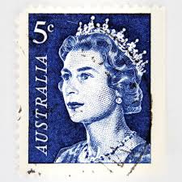 |
| allnumis.com | 5 Cents 1967 - Queen Elizabeth II, 1967 - Australia - Stamp - 52385 | 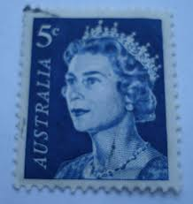 |
| eBay Australia | Royalty Blue Australian Pre-Decimal Stamps for sale | Shop with Afterpay | eBay Australia | 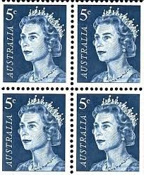 |
| PicClick AU | QUEEN ELIZABETH II stamp, 1966, 1c - Free Postage $70.95 - PicClick AU | 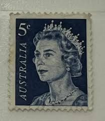 |
| HipStamp | Australia SC#396 3¢ Queen Elizabeth II (1966) Used | Australia & Oceania - Australia, General Issue Stamp / HipStamp | 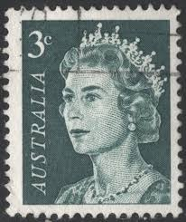 |
| PicClick UK | 1954 AUSTRALIA STAMP x 1 - Queen Elizabeth II Royal Visit - Cancelled £2.19 - PicClick UK | 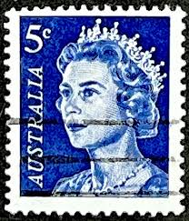 |
| eBay | Australia - 1967 - Queen Elizabeth II - 5 C - Used - #10 | eBay | 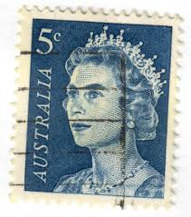 |
| australianstrampcatalogue.com | http://www.australianstrampcatalogue.com | 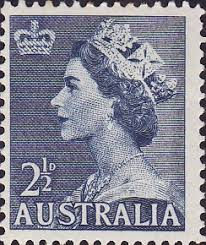 |
| Australian Stamp Catalogue | http://www.australianstrampcatalogue.com | 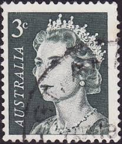 |
| Dreamstime.com | 230 Australian Penny Stock Photos - Free & Royalty-Free Stock Photos from Dreamstime | 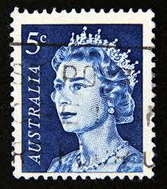 |
| Shutterstock | 8,896 Royalty Stamp Royalty-Free Images, Stock Photos & Pictures | Shutterstock | 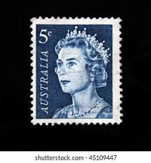 |
| Kupindo | Queen Elizabeth I Woodward - Kupindo.com (62401373) | 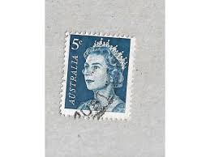 |
| eBay | 1282 MATCH SET, PLATE# 28332, DURLAND $12 | eBay | 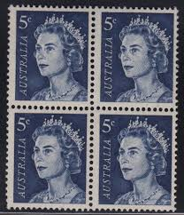 |
| HipStamp | Australia 1966 Queen Elizabeth II, 3c MNH #396,SG384 | Australia & Oceania - Australia, General Issue Stamp / HipStamp | 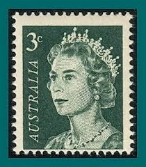 |
| HipStamp | Australia 1954 Queen Elizabeth II, 2.5d MNH #256A,SG261a | Australia & Oceania - Australia, General Issue Stamp / HipStamp | 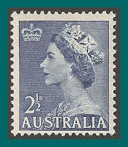 |
| HipStamp | Australia 1966 Sc#394, SG#382 1c Brown Queen Elizabeth II USED. | Australia & Oceania - Australia, General Issue Stamp / HipStamp | 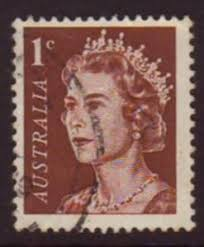 |
| eBay | No: 109217 - AUSTRALIA - "ELIZABETH" - LOT 3 OLD 5 C STAMPS -DIFF. PERF. - USED! | eBay | 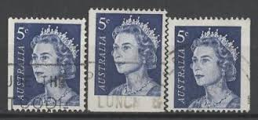 |
| PicClick AU | AUSTRALIA QUEEN ELIZABETH II Stamp 3c Australian Stamp $499.00 - PicClick AU | 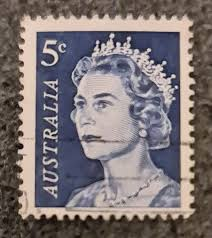 |
| Wikipedia | Fil:Australianstamp 1600.jpg – Wikipedia | 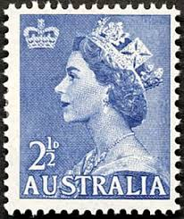 |
| eBay | Used 1/6 Denomination British Elizabeth II Stamps for sale | eBay | 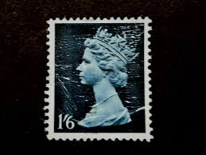 |
| eBay | Australia Royalty Queen Elizabeth Coronation 4 stamp block 1953 A-6 | eBay | 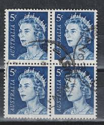 |
| ebid.net | 1966 Australia, Queen Elizabeth II, 5c blue, used stamp SG 386c on eBid United States | 150286738 | 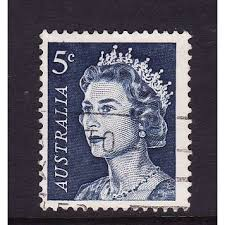 |
| HipStamp | Australia SC#257 3d Queen Elizabeth II Single (1953) MNH | Australia & Oceania - Australia, General Issue Stamp / HipStamp | 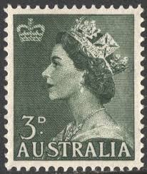 |
| eBay | UK - 1967 - Definitives - Queen Elizabeth II - 3D - #2529 | eBay | 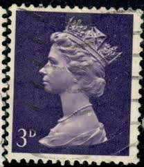 |
| HipStamp | Australia #395 2c Queen Elizabeth II | Australia & Oceania - Australia, General Issue Stamp / HipStamp | 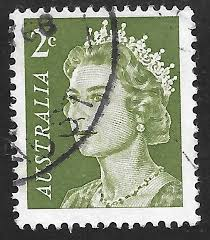 |
| HipStamp | Great Britain MH21 - Queen Elizabeth II. Used Single #02 GBMH21 | Great Britain, Back of Book (Other) - Machin Head Stamp / HipStamp | 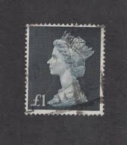 |
| HipStamp | Great Britain, Scott #MH67, used(o), 1976, Machin: Queen Elizabeth II, 9p | Great Britain, Back of Book (Other) - Machin Head Stamp / HipStamp | 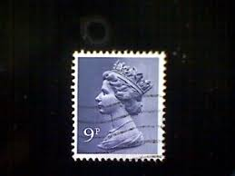 |
| eBay | GB 2017 The 65th Anniversary of the Accession of HM The Queen 5 Pound Stamp | eBay | 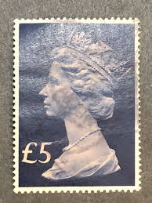 |
| HipStamp | Australia 365 (used) 5p Elizabeth II, green (1963) | Australia & Oceania - Australia, General Issue Stamp / HipStamp | 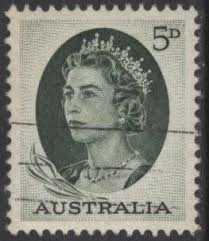 |
| eBay | Great Britain Stamp Scott #MH16a, 1sh6p, Greenish Blue Omitted, Used SCV$150 (C) | eBay | 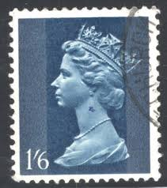 |
| eBay | GREAT BRITAIN ^^^^^sc#MH168/176 KEY high values MACHINS $$@ lar616gb6 | eBay | 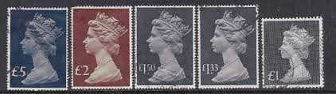 |
| PicClick AU | QUEEN ELIZABETH II stamp, 1966, 5c over the top of 4c #8 $65.00 - PicClick AU | 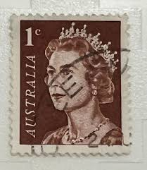 |
| eBay | UK - 1976 - Queen Elizabeth II - 9P - #2545 | eBay | 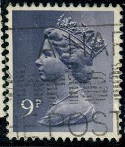 |
| Etsy | Queen Elizabeth II Stamps, Unused, Mint - Etsy | 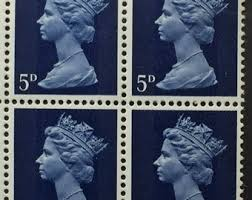 |
| The US stamps from my glory box from the car boot sale... | 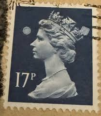 | |
| HipStamp | Great Britain #MH5 3p Queen Elizabeth II | Great Britain, Back of Book (Other) - Machin Head Stamp / HipStamp | 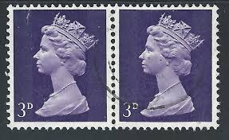 |
| HipStamp | Australia 365: 5d Queen Elizabeth II, used, VF | Australia & Oceania - Australia, General Issue Stamp / HipStamp | 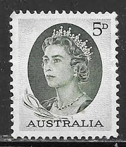 |
| eBay | Great Britain Scott # BK124 10 SH BKLT 1 ea MH7e, 2 ea MH7c, 2 ea MH8a Mint | eBay | 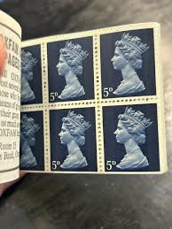 |
| eBay | 13p Denomination British Elizabeth II Stamps for sale | eBay | |
| commonwealthstamps.com | Australia Australian Postage stamps issued in the reign of Queen Elizabeth decimal era 1966 - 1974 - Page 3 | |
| Dreamstime.com | 2,437 Old British Postage Stamp Stock Photos - Free & Royalty-Free Stock Photos from Dreamstime - Page 14 | |
| eBay | Great Britain Scott #MH176 Used Machin 5£ bl & pink $$ os2 | eBay | |
| What do you know about this? | ||
| eBay | 1966 / 1967 QEII Queen Elizabeth 3c 4c 5c Coil Stamps Australia Used Lot x 60 | eBay | |
| HipStamp | Australia - Scott #365 - 5d - Queen Elizabeth II - Used | Australia & Oceania - Australia, General Issue Stamp / HipStamp | |
| Elizabethan Stamps | Listings from 'ianlasoksmith' in Fine Used Stamps > Machin High Values > 1970-72 Decimal High Values > £1 1972 bluish black (redrawn value) - 80 items per page - Recently Listed | Elizabethan Stamps | |
| ebid.net | GB SG616b 1960-67 QEII 4 1/2d Chestnut Two Phos bands M Crown Used Stamp on eBid United States | 201306408 | |
| eBay | GB 1968 Machin 5d Cylinder Booklet Pane U/M As Described GQ344 | eBay | |
| eBay | 1969 BRITAIN LOT OF THREE MNH OG STAMPS HIGH DENOM QUEEN ELIZABETH II | eBay |
{kind=link}